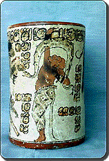
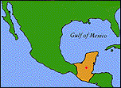
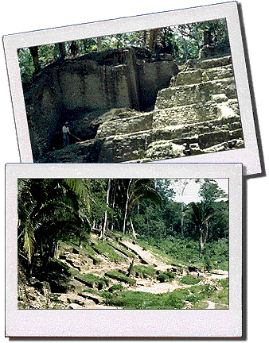

| |
Chocolate |
 Glyphs on this vessel tell a story |
What does this have to do with chocolate? The ancient Maya drank chocolate drinks out of vessels like this one found at Altar de Sacrificios, Guatemala.
Where did the Maya get chocolate? The Maya cultivated or grew a type of tree (Theobroma Cacao) that produces cacao pods that are filled with cocoa beans. The beans were crushed into a powder then mixed into a ceremonial drink. |
|
|
 excavation in 1961.
|
 |
|
What do you celebrate when you eat chocolate? What other civilizations ate or drank chocolate? What does crushed cacao taste like? |
|
|
|
|
|
 Gathered by topic |
 Connected together |
 Index of ideas |
 Search |